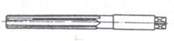
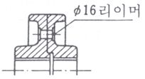
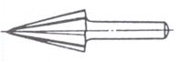
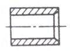
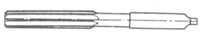
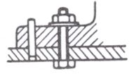
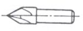
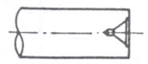
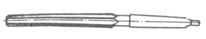
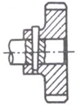

REAMER, HOLE � CUTTER
■ REAMER
단위 : ㎜
|
가 공 경 범 위 |
증 가 폭 |
|
Ø 1.5~ Ø 12 |
0.1 |
|
Ø 12.5 ~ Ø 21 |
0.5 |
|
Ø 22 ~ Ø 50 |
1 |
<비고> Reamer 가공정도는 "가공편" 참조
■ 각종 형상의 리이머
|
형 상 |
용 도 |
형 상 |
용 도 |
|
|
Hand-Reamer  |
리이머 Bolt 구멍用  |
Burring-Reamer  |
관류입구의 면취用  |
|
|
Machine-Reamer  |
Locket- Pin 구멍用  |
Center-Reamer  |
센터구멍의 다듬질用  |
|
|
Taper-Reamer  |
Taper Pin 구명用  |
|||
■ HOLE CUTTER
단위 : ㎜
|
가공경 범위 |
증 가 폭 |
|
Ø 12 ~ Ø 120 |
1 |
<비고> Ø30이하는 사용빈도가 적으므로 공구상 비치 여부 불투명